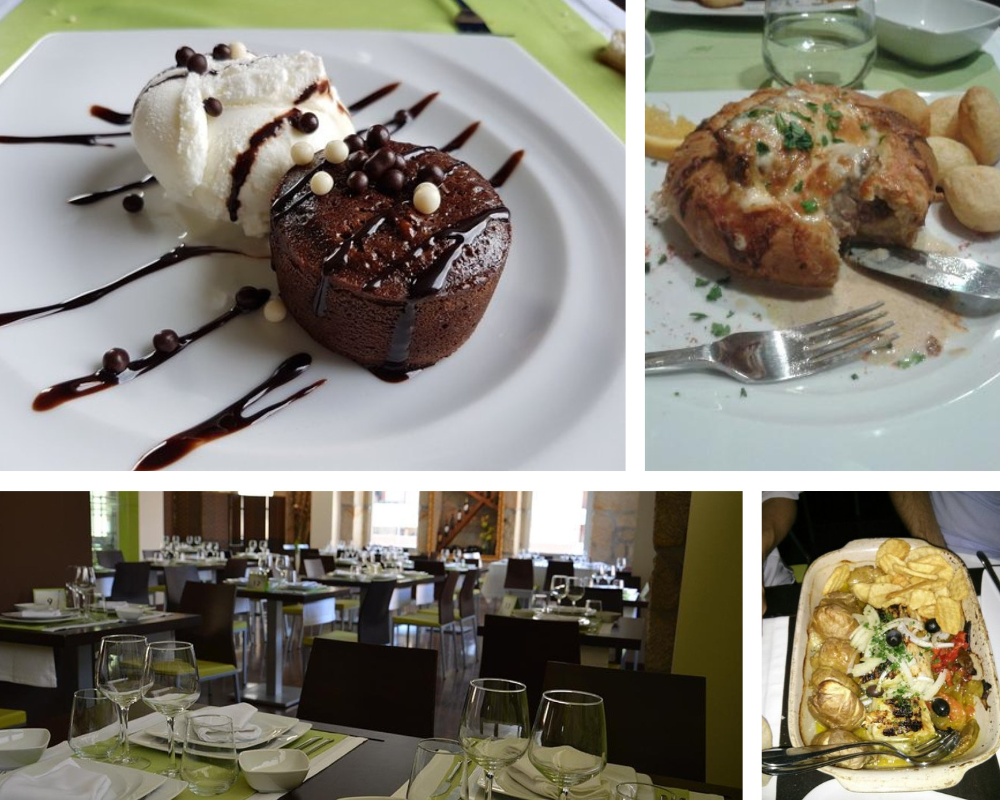
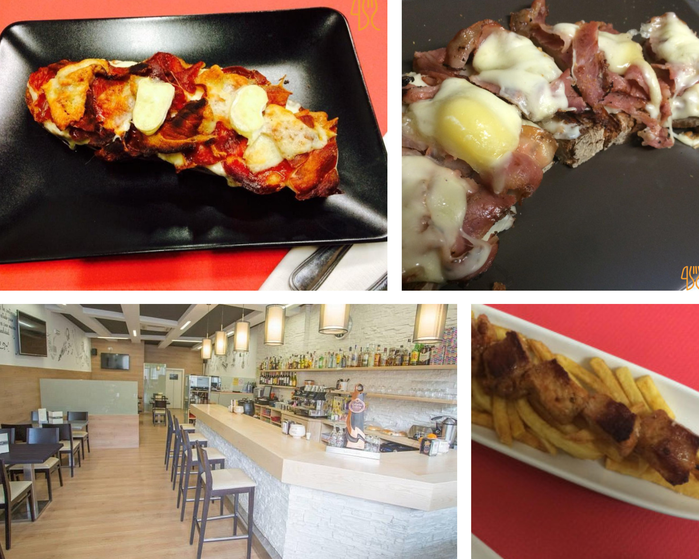
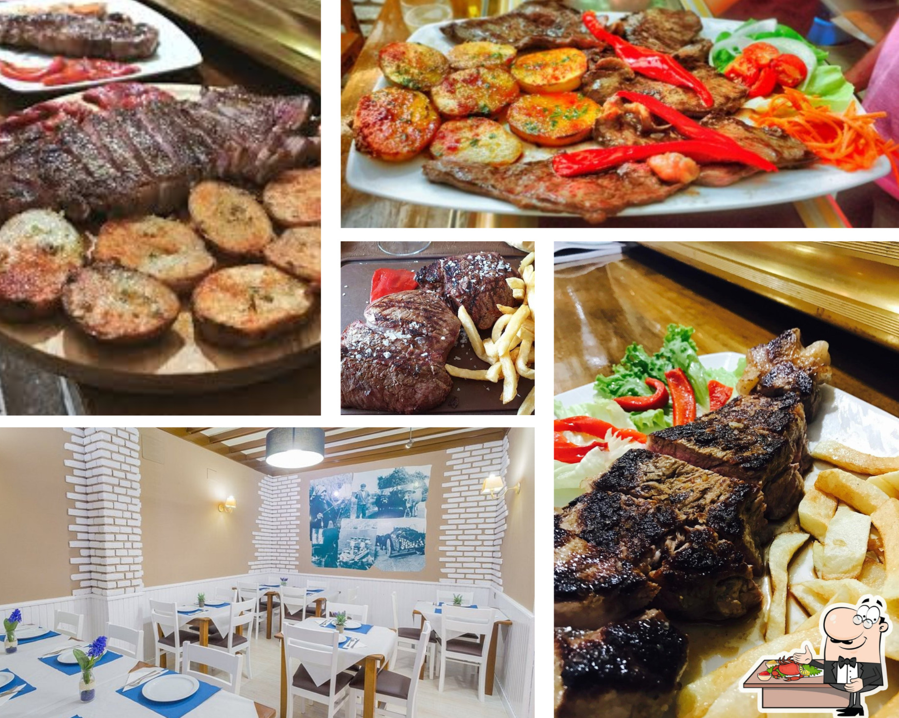
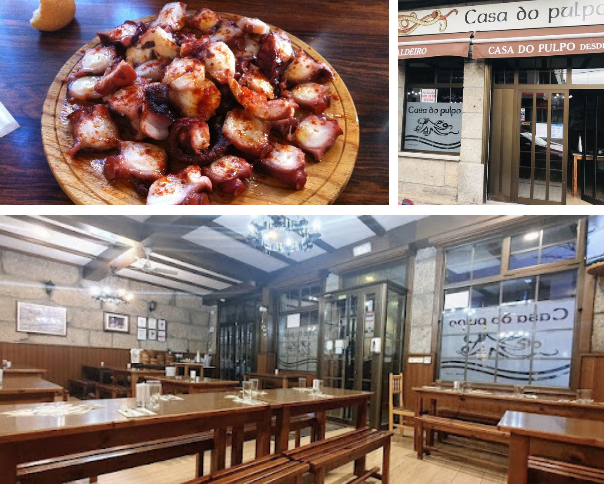
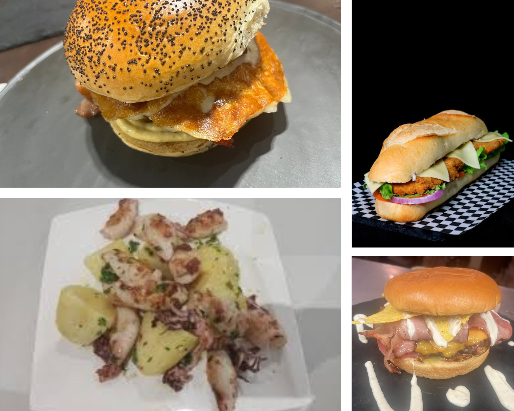
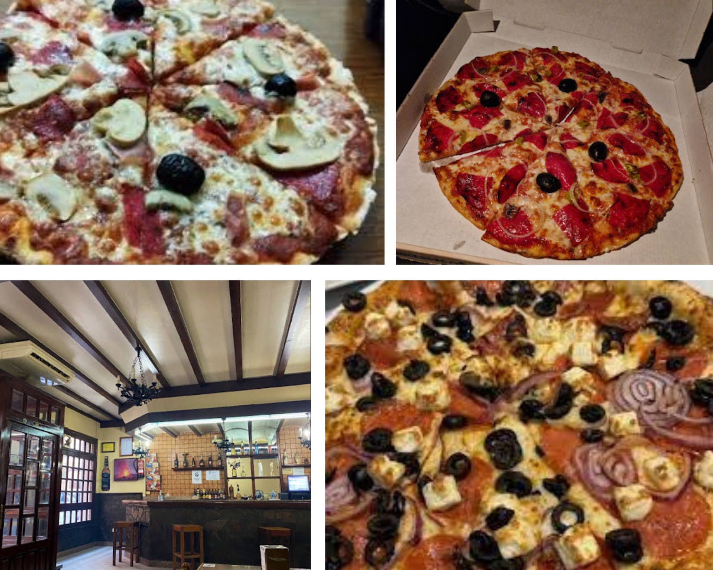
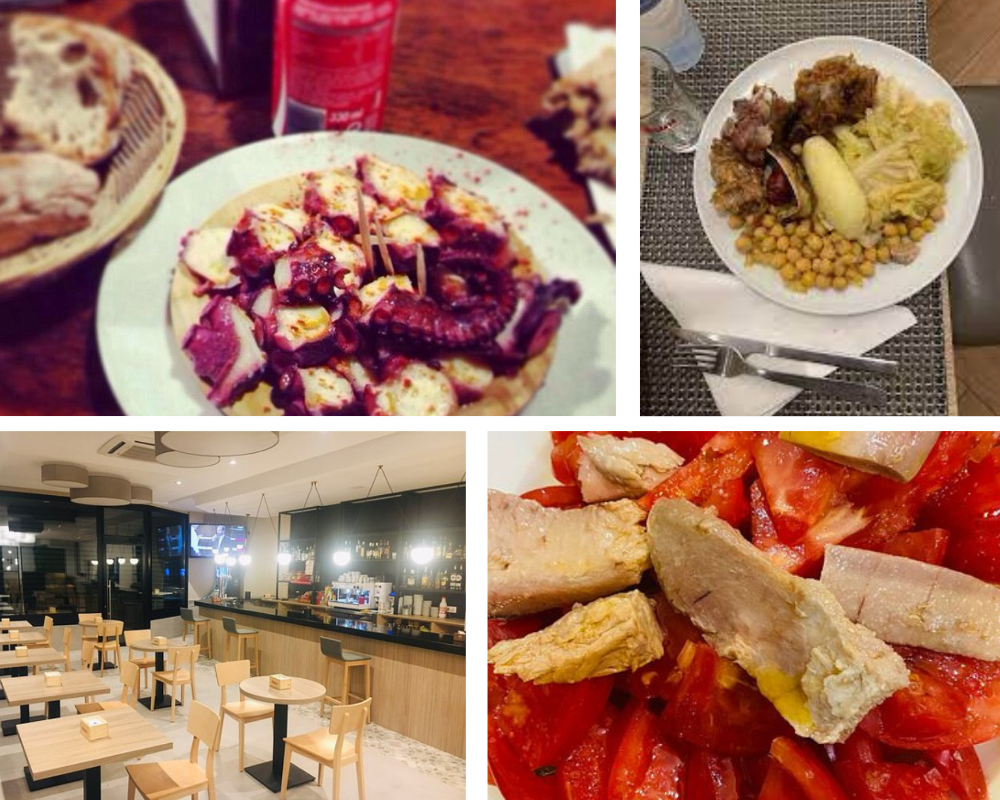
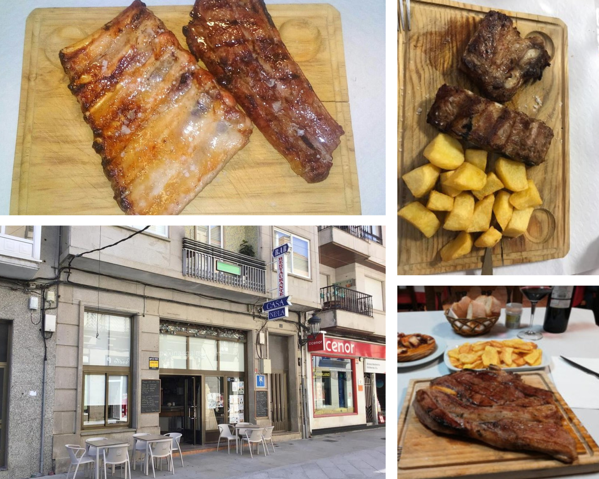

☰
Alojamientos
Transporte
Dónde Comer
Qué hacer
Zona:
Todos
Todos
Monterrei
Laza
Verín
Castrelo do Val
Cualedro
Oímbra
Vilardevós
Riós
A Gudiña
A Mezquita
Tipo:
Todos
Todos
Comida española
Comida italiana
Comida portuguesa
Económico
5 estrellas
Comida china
Vegano
Disfruta de los lugares más aclamados:

A quinta da cera

Taperia parrillada Tamega

Meson do emil

A casa do pulpo
¡Dale una oportunidad a los nuevos negocios!

Luan's cafe burger

Pizzeria Italia

Restaurante Bar Ó Fiadeiro

Casa Nela